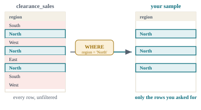
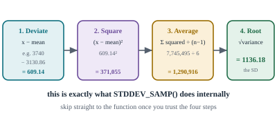
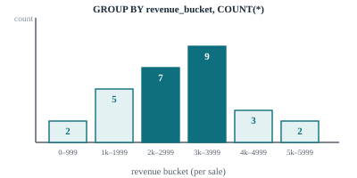
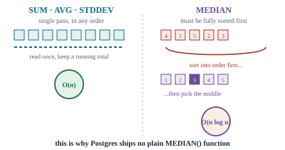
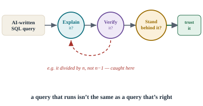
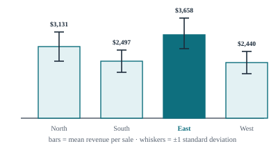

⏱
CREATE TABLE clearance_sales (
id INT PRIMARY KEY,
region TEXT NOT NULL,
discount_pct INT NOT NULL,
units_sold INT NOT NULL,
revenue NUMERIC(10,2) NOT NULL
);
INSERT INTO clearance_sales (id, region, discount_pct, units_sold, revenue) VALUES
(1, 'North', 10, 40, 2880.00),
(2, 'North', 15, 55, 3740.00),
(3, 'North', 20, 68, 4352.00),
(4, 'North', 25, 70, 4200.00),
(5, 'North', 30, 60, 3360.00),
(6, 'North', 35, 42, 2184.00),
(7, 'North', 40, 25, 1200.00),
(8, 'South', 10, 30, 2160.00),
(9, 'South', 15, 42, 2856.00),
(10, 'South', 20, 54, 3456.00),
(11, 'South', 25, 58, 3480.00),
(12, 'South', 30, 50, 2800.00),
(13, 'South', 35, 34, 1768.00),
(14, 'South', 40, 20, 960.00),
(15, 'East', 10, 46, 3312.00),
(16, 'East', 15, 63, 4284.00),
(17, 'East', 20, 79, 5056.00),
(18, 'East', 25, 84, 5040.00),
(19, 'East', 30, 71, 3976.00),
(20, 'East', 35, 49, 2548.00),
(21, 'East', 40, 29, 1392.00),
(22, 'West', 10, 22, 1584.00),
(23, 'West', 15, 38, 2584.00),
(24, 'West', 20, 60, 3840.00),
(25, 'West', 25, 52, 3120.00),
(26, 'West', 30, 63, 3528.00),
(27, 'West', 35, 30, 1560.00),
(28, 'West', 40, 18, 864.00);
⏱

SELECT region, discount_pct, revenue
FROM clearance_sales
WHERE region = 'North';
⏱
AVG(x) = SUM(x) / COUNT(x)
SELECT
SUM(revenue) AS total_revenue,
COUNT(revenue) AS num_sales,
SUM(revenue) / COUNT(revenue) AS avg_by_hand,
AVG(revenue) AS avg_builtin
FROM clearance_sales;
-- total_revenue = 82084.00
-- num_sales = 28
-- avg_by_hand = 2931.57
-- avg_builtin = 2931.57
⏱

-- Step 1: get the mean first (as a subquery, since SQL needs it before it can deviate anything from it)
SELECT ROUND(
SQRT(
SUM(
POWER(revenue - (SELECT AVG(revenue) FROM clearance_sales WHERE region = 'North'), 2)
) / (COUNT(*) - 1) -- Steps 2-3: square each deviation, then average by n-1
), 2 -- round to 2 decimal places, or Postgres hands back the full float
) AS stddev_by_hand -- Step 4: square root
FROM clearance_sales
WHERE region = 'North';
-- stddev_by_hand = 1136.18SELECT
ROUND(STDDEV_SAMP(revenue), 2) AS stddev_samp, -- divides by n-1: use when your rows are a SAMPLE
ROUND(STDDEV_POP(revenue), 2) AS stddev_pop -- divides by n: use only if these rows are the ENTIRE population
FROM clearance_sales
WHERE region = 'North';
-- stddev_samp = 1136.18 (matches stddev_by_hand above)
-- stddev_pop = 1051.90
⏱

SELECT
CASE
WHEN revenue < 1000 THEN '0-999'
WHEN revenue < 2000 THEN '1000-1999'
WHEN revenue < 3000 THEN '2000-2999'
WHEN revenue < 4000 THEN '3000-3999'
WHEN revenue < 5000 THEN '4000-4999'
ELSE '5000+'
END AS revenue_bucket,
COUNT(*) AS num_sales
FROM clearance_sales
GROUP BY revenue_bucket
ORDER BY revenue_bucket;
-- 0-999 | 2
-- 1000-1999 | 5
-- 2000-2999 | 7
-- 3000-3999 | 9
-- 4000-4999 | 3
-- 5000+ | 2
⏱

SELECT PERCENTILE_CONT(0.5) WITHIN GROUP (ORDER BY revenue) AS median_revenue
FROM clearance_sales;
-- median_revenue = 3000.00
⏱
SELECT
region,
COUNT(*) AS num_sales,
ROUND(AVG(revenue), 2) AS avg_revenue,
ROUND(STDDEV_SAMP(revenue), 2) AS stddev_revenue,
PERCENTILE_CONT(0.5) WITHIN GROUP (ORDER BY revenue) AS median_revenue
FROM clearance_sales
GROUP BY region
ORDER BY avg_revenue DESC;| region | num_sales | avg_revenue | stddev_revenue | median_revenue |
|---|---|---|---|---|
| East | 7 | 3658.29 | 1344.36 | 3976.00 |
| North | 7 | 3130.86 | 1136.18 | 3360.00 |
| South | 7 | 2497.14 | 923.22 | 2800.00 |
| West | 7 | 2440.00 | 1126.78 | 2584.00 |
⏱
-- What the assistant hands back:
SELECT SQRT(
SUM(POWER(revenue - avg_rev, 2)) / COUNT(*) -- divides by n
) AS stddev
FROM clearance_sales,
(SELECT AVG(revenue) AS avg_rev FROM clearance_sales) t;-- These 28 rows are a sample of the store's clearance history,
-- not the entire population of every sale ever made, so we divide by n-1.
SELECT ROUND(STDDEV_SAMP(revenue), 2) AS stddev_sample
FROM clearance_sales;
-- stddev_sample = 1191.15
⏱

⏱